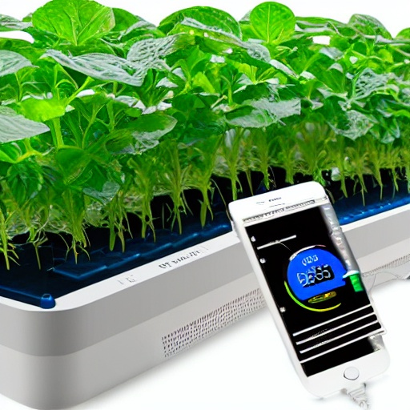
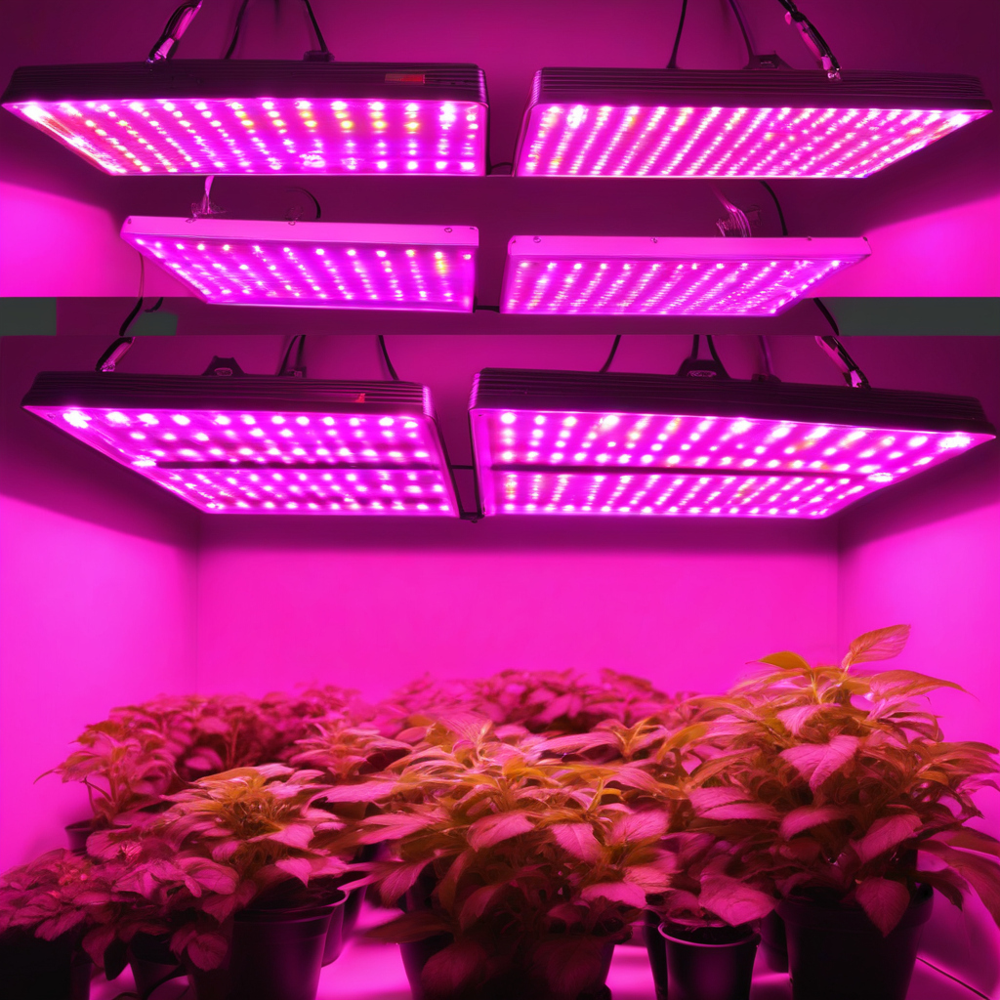
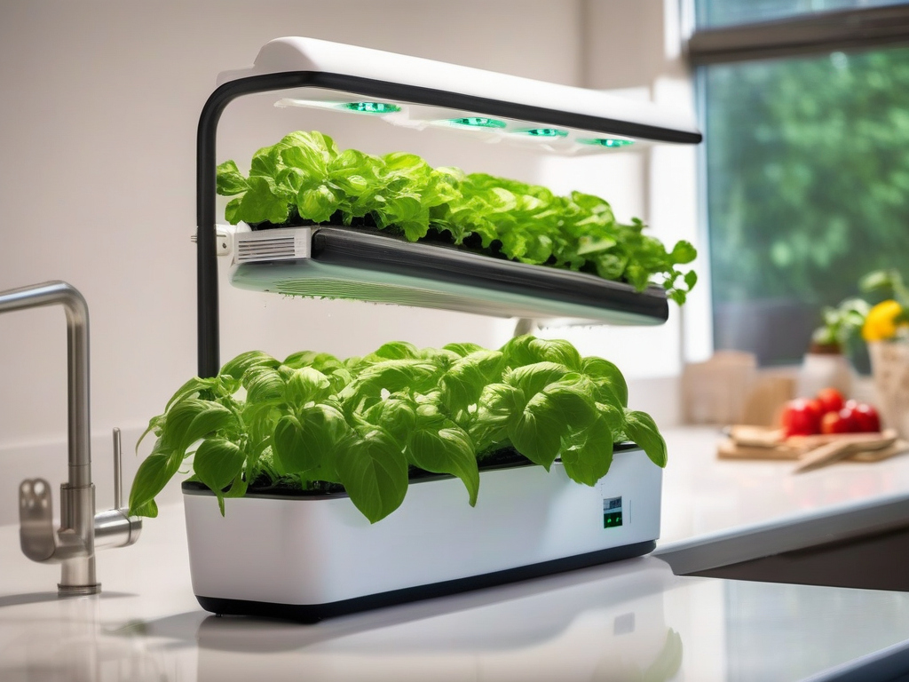

Our Products
Our automated nutrient delivery system ensures precise and efficient distribution of nutrients to your hydroponic plants. With customizable settings and real-time monitoring capabilities, it optimizes plant growth while minimizing waste.
Our smart pH monitoring device provides accurate and continuous monitoring of pH levels in your hydroponic system. It offers real-time alerts and data visualization, allowing you to maintain optimal pH conditions for healthy plant growth with ease.
Our LED grow lights feature advanced spectrum control technology, allowing you to customize light wavelengths to match specific plant growth stages. With energy-efficient design and precise light output, they promote robust growth and maximize yields in your hydroponic setup.
Transform your living space into a lush, green oasis with our Home Hydroponic Starter Kit. Perfect for beginners and seasoned gardeners alike, this compact and user-friendly system brings the joys of hydroponic gardening right to your home.